- Overview
- Before Adding JavaScript to Your Dynaform
- What JavaScript can do
- What JavaScript can't do
- Adding JavaScript to a Dynaform
- Dynaform Structure
- Accessing Controls with JavaScript
- Obtaining a control's jQuery object
- Setting a control's value
- Obtaining a control's input field
- Obtaining a control's outer DIV
- Accessing Styles
- Obtaining a control's label
- Getting information about a control
- Obtaining the form object
- Accessing a field's value
- Setting a field's value
- Working with Numbers
- Tying Code to Events
- Model information
- External JavaScript and CSS Files
- Considerations Before Using External Libraries
- Example using an external library
- Importing files referencing Dynaform objects
- Importing confidential files
- Frames
- Tooltips
- Debugging JavaScript
Overview
JavaScript code can be added to a Dynaform to customize its behavior and to add additional functionality. ProcessMaker provides a number of custom methods for interacting with Dynaform controls. Most JavaScript and jQuery common functions can also be used, but they are not officially supported.
ProcessMaker 3 uses a custom JavaScript framework named "Michelangelo Front End" or "mafe" for short, which was built using Backstrap, which is based on Bootstrap, Backbone and jQuery. Additionally, ProcessMaker provides a Preview mode when designing a Dynaform, on which JavaScript code can be tested in different sized web browsers before deploying processes.
Before Adding JavaScript to Your Dynaform
Take a look at the complete list of best practices related to the use of JavaScript in Dynaforms.
What JavaScript can do
JavaScript is very useful for improving the usability and functionality of Dynaforms. JavaScript can used for tasks such as:
- Dynamically hiding and showing fields based on users' actions.
- Changing the text and the style properties of fields.
- Offering help and guiding users with messages and alerts.
- Validating and standardizing the data entered into fields.
- Automatically inserting values into fields.
- Making calculations between fields.
- Managing grid field operations.
- Checking the data and forcing the user to change values before submitting a Dynaform.
- Opening and closing other browser windows.
What JavaScript can't do
JavaScript is only a browser side language. For security reasons, the language is limited to the data available in Dynaforms (and in other browser windows). JavaScript is not designed to:
- Access data which is not in the Dynaform or one of the web browser windows.
- Access databases on the server (unless using XMLHttpRequest).
- Execute operations in the server (unless using XMLHttpRequest).
- Execute external programs (unless providing a link to a file which the web browser is configured to open with an external application).
Adding JavaScript to a Dynaform
To add JavaScript to a Dynaform, first open the Dynaform for editing. Then click on the light blue border of the Dynaform (which is the space outside the controls) to display the properties of the Dynaform.
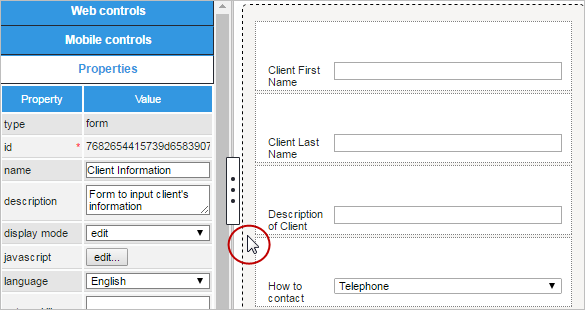
In the list of properties which appears in the left hand panel, click on the Edit button in the JavaScript property.
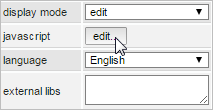
A JavaScript editing window will open, where code can be entered.
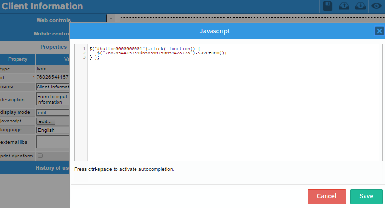
Enter code in the editing window, which has syntax highlighting to show matching parentheses and brackets and display strings, key words and other elements in different colors in order to more easily spot syntax errors.
Auto Completion
The code editor provides auto completion, to insert JavaScript functions and objects or ProcessMaker's custom ones in the code. To use auto completion, press CTRL and SPACE simultaneously. If the cursor is located next to a space, then the full list of available elements will appear, but if next to a string of letters, auto completion will filter the list for elements which begin with that string. Continue typing to further filter the available list of options.

Click on one of the options to insert it in the code or use the arrow keys to move to one of the options and press ENTER to insert it or press ESCAPE to exit the list.
Auto completion can also insert the properties and methods of JavaScript and ProcessMaker objects. Enter the name of an object followed by a period and press CTRL + SPACE to see a list of the elements in that object.
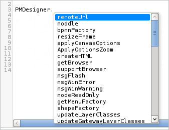
When done editing the JavaScript code, click on Save to store the changes or click on Cancel to discard them.
Checking the code in Preview mode
After editing the code, it can be executed by clicking on in the toolbar to switch to preview mode.
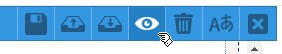The new JavaScript code will immediately execute upon displaying the form in preview mode. The Dynaform will be automatically saved before entering preview mode:
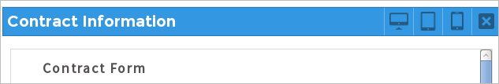
To see how the code will execute in different sizes of web browsers, click on (Desktop), (Tablet) or (Smartphone) to view the form in different modes. Note that these options are for testing code in the web browser version of ProcessMaker. Use Android or iOS devices (or their emulators) to test custom JavaScript code in the ProcessMaker Mobile App.
If needing to see how the JavaScript code interacts with real data from a case, go to Home > New Case and run a case. To figure out why JavaScript code is not behaving as expected, see Debugging JavaScript.
Dynaform Structure
In order to understand how to interact with Dynaform controls using JavaScript, it is first necessary to understand the structure of Dynaforms in ProcessMaker 3.
In ProcessMaker 2, Dynaforms were based upon HTML tables, which were not very flexible in their structure. In ProcessMaker 3, however, Dynaforms are built using DIVs which can be a variable number of columns wide. The horizontal space of a Dynaform is divided into 12 columns, which each occupy 8.33% of the width of the Dynaform.
Each control can occupy up to 12 columns of horizontal space in the Dynaform. The number of columns can be configured in the properties of each control.
For example, a control which is 3 columns will occupy 25% of the width, whereas a control which is 8 columns will occupy 66.7% of the width.
Each control in a Dynaform are placed inside a DIV which has one or more classes which are named "col-size-number", where size can be xs (extra small), sm (small), md (medium) or lg (large) and number is the number of columns which the DIV occupies. The size is used for different situations where there is more or less space available.
In desktop mode, the label for a control will occupy 2 columns by default and the control will occupy 10 columns by default. The label will use the CSS classes col-md-2 and col-lg-2, while the control will be placed inside a DIV which uses the classes col-md-10 and col-lg-10.
Here is the structure of the Dynaform in desktop mode:
The Dynaform is placed in a <form> whose ID is an automatically generated unique ID of 32 hexadecimal characters. Each control in Dynaforms has an id which is defined under its properties. If the control is an input field, it will also have a name which comes from the name of the variable which stores the value in the input field when the Dynaform is submitted.
Each control is wrapped inside an <div> which has the ID of the control and its name is "field-variable-name". If the control doesn't have a variable, then the control's name is automatically generated as "type000000000X". Inside this outer DIV, there is a <label> and an inner <div>, which encloses the input field.
The input field has an id which is "form[control-id]" and a name which is "form[variable-name]". In addition there is a hidden field which has the id which is "form[control-id_label]" and a name which is "form[variable-name_label]".
This structure repeats for each control in the Dynaform. Understanding this structure is useful if needing to access a control or its surrounding DIVs using JavaScript.
For example, the following Dynaform has two textbox controls:
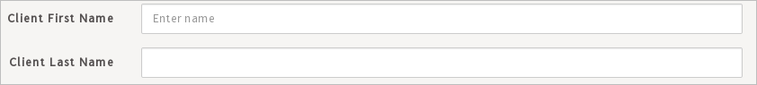
The following HTML code for this Dynaform defines the two textboxes with the IDs "FirstName" and "LastName", which use the variables "clientFirstName" and "clientLastName", respectively:
<form role="form" class="form-horizontal pmdynaform-form" style="height: 99%;" action="" method="get" id="411049250552d28bd8df3e9066569762">
<div class="pmdynaform-field row show-grid">
<div>
<div class="pmdynaform-field-text pmdynaform-edit-text form-group col-sm-12 col-md-12 col-lg-12"
name="field-clientFirstName" id="FirstName">
<label class="col-md-2 col-lg-2 control-label pmdynaform-label" for="clientFirstName">
<span class="textlabel" title="" data-placement="bottom" data-toggle="tooltip">Client First Name</span>
</label>
<div class="col-md-10 col-lg-10">
<input type="text" autocomplete="off" value="" placeholder="Enter name" class="pmdynaform-control-text form-control"
mask="" name="form[clientFirstName]" id="form[FirstName]">
<input type="hidden" value="" name="form[clientFirstName_label]" id="form[FirstName_label]">
</div>
</div>
</div>
</div>
<div class="pmdynaform-field row show-grid">
<div>
<div class="pmdynaform-field-text pmdynaform-edit-text form-group col-sm-12 col-md-12 col-lg-12"
name="field-clientLastName" id="LastName">
<label class="col-md-2 col-lg-2 control-label pmdynaform-label" for="clientLastName">
<span class="textlabel" title="" data-placement="bottom" data-toggle="tooltip">Client Last Name</span>
</label>
<div class="col-md-10 col-lg-10">
<input type="text" autocomplete="off" value="" placeholder="" class="pmdynaform-control-text form-control"
mask="" name="form[clientLastName]" id="form[LastName]">
<input type="hidden" value="" name="form[clientLastName_label]" id="form[LastName_label]">
</div>
</div>
</div>
</div>
</form>
</div>
Accessing Controls with JavaScript
The responsive Dynaforms in ProcessMaker 3 are built using the jQuery library, plus the backbone.js library to represent the data in fields and the bootstrap.js library to make the controls automatically adjust for different widths and different devices (desktops, tablets and smartphones).
In order to manipulate a control in a Dynaform, first obtain the object for the control. This object can be one of three types:
- A jQuery object, which has custom ProcessMaker methods added such as control.getValue(), control.setValue(), control.getLabel(), control.setLabel(), etc. It is recommended to manipulate Dynaform controls through their jQuery object, which can be obtained using the jQuery selector
$("#id"). This jQuery object also provides access to the standard DOM object through the first element in its array:Object[0] - A Backbone object, which has custom ProcessMaker methods added such as grid.addRow() and grid.deleteRow() for grids, plus the grid.gridtable property. This object can be obtained using the getFieldById(), getFieldByName(), getFieldByAttribute() and getFormById() functions. The Backbone object also provides access to the standard DOM object through its
Object.elproperty and the jQuery object through itsObject.$elproperty. - A standard DOM (Document Object Model) object, which allows standard JavaScript methods and properties to be used. This object is obtained using JavaScript functions such as document.getElementById(), document.getElementsByName(), and document.getElementsByClassName() or by navigating the structure of the Document Object Model (DOM), using properties such as Node.parentNode, Node.childNodes[i] and Node.nodeType. It is NOT recommended use the DOM object because some DOM methods such as
getElementById()do not work correctly in the ProcessMaker Mobile App.
It is recommended to use ProcessMaker's custom functions and methods to manipulate the controls when possible, because they have built-in error checking when setting the value of fields and are generally easier to use. Many operations, however, such as changing the style properties of a field or setting event handlers, are only possible using standard jQuery methods.
Obtaining a control's jQuery object
All the controls in a Dynaform have an ID, which can be used to obtain the control's jQuery object which ProcessMaker uses to manipulate the control. jQuery's selector method can be used to access the control using its ID:
For example, if the ID of a control is "clientName", then its value can be obtained with the following code:
Remember that IDs are case sensitive and cannot contain spaces. For more information, see: Obtaining jQuery objects.
Setting a control's value
Once the jQuery object for a control is obtained, its setValue() method is be used to set the control's value. For example, to set the values in a textarea with the ID "clientAddress" and in a textbox with the ID "taxRate":
$("#taxRate").setValue(0.15)
To learn how to set the value for different types of controls, see the documentation for setValue().
Obtaining a control's input field
The input field for most types of controls has an ID of "form[id]". The control.getControl() method can be used to obtain the jQuery object for an input field. This method is often used when needing to change the style of a control's input field or when needing to set an event for the input field.
Example:
Change the border color or a textbox with the ID "amount" to blue when the mouse passes over it if its value is great than 500.
if ($("#amount").getValue() > 500)
$("#amount").getControl().css("borderColor", "blue");
else
$("#amount").getControl().css("borderColor", ""); //set border to its default color
} );
$("#amount").getControl().mouseout( function() {
$("#amount").getControl().css("borderColor", ""); //set border to its default color
} );
In the "howContact" checkgroup below, it has the the options of "fax", "email" and "telephone". To set a dark blue outline around these checkable boxes:
Unfortunately, the getControl() method does not work with the following controls because they do not have an input field.
| getControl() Method Unsupported Controls | |
|---|---|
| Titles | Subtitles |
| Labels | Panels |
| Images | Links |
| Files | Submits |
| Buttons | Subforms |
However, most of these control's still have an element inside with the ID:
Therefore, it is still possible to manipulate the element inside a control using the .find() to search for the HTML element inside the outer DIV which holds the control. The .find() jQuery method traverses down the DOM and gets all the descendants (child, grandchild, great-grandchild...) of each element in the current set of matched elements, filtered by a selector.
To use this method, it is useful to open the web browser's debugger and examine the HTML code to find the elements inside controls.
The HTML element to search for depends on the type of control, such as:
<h4>for a Title,<h5>for a Subtitle,<button>for a File, Submit and Button,<img>for an Image,<a>for a Link,<h4>for a Title,- various
<div>s for grids, panels and subforms, <span>inside Title, Subtitles and Labels.
For example, this JavaScript code changes the color of a link with the ID "companyPage" to blue, so it is more visible to the user:
Examples:
To change the color of a subtitle to red, search for the <span> element inside the control:
To set the background color of a button with the ID "calculateTotal" to green, search for the <button> element inside the control.
To change the background color and the size font of a label when the mouse cursor is on top of it:
To search elements by their style name. For example, titles keep their text inside a <span> with the style "textlabel". The example sets the color of a title with the ID "accountingSection" to the color green:
Obtaining a control's outer DIV
Each control has an outer DIV which encloses both the label and its inner DIV (which holds the control's input field).
Use the controls' ID in a jQuery selector to access this outer DIV:
This returns a jQuery object and not a standard DOM object for the DIV, so the standard JavaScript properties aren't available. However, the standard DOM object for a control's outer DIV is available as the first element in an array:
Example 1:
Make the outer DIV holding the "clientAddress" field change to the color orange when the mouse passes over or when the user taps this section if using ProcessMaker Mobile. Using the mouseover and mouseout events:
$(this).css("backgroundColor", "orange");
} );
$('#clientAddress').mouseout( function() {
//set back to original color
$(this).css("backgroundColor", "");
} );
Example 2:
To set the background color of the outer DIV to green for a control with the ID "clientNumber":
Example 3:
Change the border color of the outer DIV for the "clientName" field to the color blue:
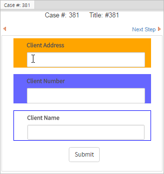
Accessing Styles
Using jQuery .find(), the appearance of Dynaform controls can be controlled by using the css() method:
To find information about each style property, see the Cascading Style Sheets documentation for Mozilla and Internet Explorer.
Example:
The color and the border can be set using css() function for a Title and .find() to search for its <h4> tag:
Obtaining a control's label
If needing to get or set the text in a control's label, it is recommended to use the control.getLabel() and control.setLabel() methods.
However, if needing to directly access the label to set its style properties, it is nested inside a <label> and a <span>:
From the control's outer DIV, use find() to search for the <span> using the "textlabel" class:
Examples:
Change the font color of the label for the "TotalCharge" field to red to draw the user's attention:
Increase the font size of the label for the "TotalShipping" field:

Getting information about a control
The control's object has a control.getInfo() method which can be used to obtain the model information about a control.
Obtaining the form object
Each Dynaform has a 32 digit hexadecimal ID number which is automatically generated when the form is initially created. To access the form with JavaScript, first get form's ID by clicking on the grey border around the Dynaform to see its properties.

The id can be used to access the form's object. To get the jQuery object for the form:
Set the background color of a form with the ID "315000439561bfbb2880516004635450" to light gray:
Loop through all the <input> and <textarea> elements in a form with the ID "315000439561bfbb2880516004635450" and set their border color to red if they do not contain a value when the Dynaform is loaded.
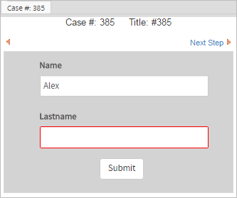
Accessing a field's value
To obtain the current value of an input field, use the control.getValue() method of its object.
Setting a field's value
To set the value of a field, use the control.setValue() method to set the contents of an input field.
Working with Numbers
All fields store their value as a string, which can create problems if needing to do mathematical operations or comparison of numbers. In JavaScript operators such as + (plus sign) and comparison operators such as > (greater than) and < (less than) operate differently depending on whether working with string or numbers.
The + operator adds numbers, but concatenates strings:
23.4 + 9.7 | equals 33.1 |
"23.4" + "9.7" | equals "23.49.7" |
If one of the operands is a string, then + will convert the other operand to a string and concatenate them:
"23.4" + 9.7 | equals "23.49.7" |
If using the - (subtraction), * (multiplication) and / (division) operators, JavaScript will automatically convert any strings to numbers if possible before executing the mathematical operations.
The comparison operators == (equals to), > (greater than), >= (greater than and equal to), < (less than) and <= (less than and equal to) compare strings differently from numbers:
3 > 2 | equals true |
"3" > "2" | equals true |
"03" > "2" | equals false |
" 3" > "2" | equals false |
When comparing strings, JavaScript compares each character in the two strings, one by one until it encounters a two characters which are different. It then converts the characters into their ASCII values in order to compare them, so "0" is less than "2" and " " is less than "2", which is why both "03" > "2" and " 3" > "2" are false.
If one of the operands is a number, then JavaScript will attempt to convert the other to a number before doing the comparison:
"03" == 3 |
equals true |
" 3" == "3" |
equals false |
To avoid these problems, it is recommended to convert field values to numbers before when doing mathematical operations and comparisons. Use the parseInt() function to convert strings to integers and parseFloat() function to convert strings to floating point numbers, which are real numbers which can have decimal points. If the field can accept both integers and floating point numbers, then create a new Number object to convert the string.
Example:If JavaScript is used to add together two fields and insert the sum into a third field:
$("#field3").setValue(newVal);
or:
$("#field3").setValue(newVal);
or:
$("#field3").setValue(newVal);
JavaScript will ignore leading or trailing spaces, when converting strings into numbers, but other characters, such as "," (commas), "$" (dollar signs), "%" (percent signs), can cause the conversion to fail, which results in a NaN (Not-a-Number). To test whether a value is not a valid number, use the isNaN() function. For example:
if (isNaN(f3))
$("#field3").setValue(0);
else
$("#field3").setValue(f3);
Stripping characters from numbers
If the user might insert characters which aren't recognized as valid numbers, such as "$", "€", these characters need to be stripped before performing mathematical operations. Another problem is if a user uses commas "," as the decimal separator or uses a thousands separator in numbers. JavaScript will not recognize the following numbers:
| Invalid number | Change to |
|---|---|
| $40.99 | 40.99 |
| 5_991.37 | 5991.37 |
| 334,121.9 | 334121.9 |
| 449 888.11333 | 449888.11333 |
| 555-99137 | 55599137 |
To strip out all possible non-numeric characters, it is recommended to use the following stripNonNumeric() function, before calling parseInt(), parseFloat() or Number():
str += ""; //force str to be a string
var rgx = /^\d|\.|-$/;
var out = "";
for (var i = 0; i < str.length; i++) {
if (rgx.test(str.charAt(i))) {
if (!((str.charAt(i) == '.' && out.indexOf('.') != -1) ||
(str.charAt(i) == '-' && out.length != 0 )))
{
out += str.charAt(i);
}
}
}
return out;
}
The following code could be used to call the stripNonNumeric() function, when performing a mathematical operation with the "amount" field:
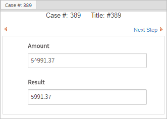
Converting numbers to strings
Dynaform fields store their values as a string. A number which is set as the value of a Dynaform field will be automatically converted to a string:
To convert a number to a string, use the toString() method:
var str = num.toString();
Alternatively, concatenate an empty string to a number to convert it to a string:
In most cases it is not necessary to explicitly convert numbers to string, since numbers will automatically be converted when concatenated with other strings:
alert("The answer is " + num);
To round to the nearest whole number use the Math.round() method:
$("#field3").setValue(Math.round(num)); //converts to 13
$("#field1").setValue(num.toFixed(2)); //converts to "12.45"
$("#field2").setValue(num.toFixed(4)); //converts to "12.4597"
Note that the Number.toFixed() method simply drops any remaining decimal digits and does not round the number properly. If needing a certain number of rounded decimal digits, then use the following roundToFixed() function:
var rounder = Math.pow(10, _digits);
return (Math.round(_float * rounder) / rounder).toFixed(_digits);
}
var num = 12.459789;
$("#field1").setValue(roundToFixed(num, 2)); //converts to "12.46"
$("#field2").setValue(roundToFixed(num, 4)); //converts to "12.4598"
The conversion to a string will use English-style numbers with a "." (dot) as the decimal separator. To use "," (comma) as the decimal separator, first convert the number to a string by concatenating a empty string (+"") to the number, then use the replace() method to replace the dot with a comma:
var str = (num + '').replace('.', ',');
$("#field1").setValue(str);
Tying Code to Events
By default all JavaScript code is executed when the Dynaform is being loaded, which may not be what is desired. For example, code may need be executed when a button is clicked or when the value of a field changes.
To make JavaScript code execute in response to particular actions, event handlers can be assigned to JavaScript events. An event is when a particular action occurs, such as the loading of a particular control, the submitting of a form, or a keypress by the user. An event handler is custom code which is set to execute when an event takes place. The event handler can be a named function or an anonymous function which is defined on the spot.
Some common JavaScript events include:
| Event | Description |
blur: |
The field looses focus. |
change: |
The value or selected option(s) of a field changes. This is probably the most commonly used event. If creating a change event handler for a single field, ProcessMaker provides the control.setOnchange() method to set the event handler. |
click: |
Any mouse button (which can be the right, left or center button) is clicked over the field, meaning that the button was pressed and released while the mouse cursor is over the field. |
dblclick: |
Any mouse button (which can be the right, left or center button) is double clicked over the field, meaning that the button was pressed and released twice while the mouse cursor is over the field. |
focus: |
The field receives the focus, meaning that the field is selected to interact with the user. A field can receive focus automatically when a Dynaform is first loaded, or it can receive the focus when a user click on the field is a mouse button or uses the TAB or SHIFT TAB keys to move to the field. If it is a text field, then the cursor will be placed inside the field for editing. If a button, then the button will be highlighted and it can be clicked by simply pressing ENTER. If creating a focus event handler, ProcessMaker provides the control.setFocus() method to set the event handler. |
input: |
When the value is changed in an <input> or <textarea> element. This event occurs immediately after each change in the value (such as a key press or paste action) and does not wait for the element to loose focus like a change event. |
keypress: |
Any key is depressed and released while a field has focus. |
keydown: |
Any key is depressed while a field has focus. |
keyup: |
Any key is released while a field has focus. |
load: |
An object is loaded, which happens when a Dynaform is displayed to the user. |
mousedown: |
Any mouse button (which can be the right, left or center button) is depressed while the mouse cursor is over the field. |
mouseup: |
Any mouse button (which can be the right, left or center button) is released while the mouse cursor is over the field. |
mouseover: |
The mouse cursor moves into a field (its buttons do not have to be clicked). |
mouseout: |
The mouse cursor moves out of a field (its buttons do not have to be clicked). |
unload: |
An object is unloaded when the user closes a Dynaform (which can happen when clicking on a submit button or the Next Step link in a Dynaform or by closing or going backward or forward in the web browser window). |
| Form Events | |
reset: |
The form is reset (which happens when $(#form-uid")[0].reset() is called), so the Dynaform fields are reset to their original values. |
submit: |
The form is submitted (which happens when the submit button in the Dynaform is clicked), so the Dynaform's data is saved to the database. |
jQuery provides methods for each event such as blur(), keypress(), click(), etc. If called without any argument, then the method will trigger the event.
Each control has an outer DIV whose ID is set to the control's ID. To trigger an event in the outer DIV holding a control:
Inside that DIV is located the control's element, which can be an <input>, <textarea>, <select>, <button>, <img>, <a>, <span>, etc. and most of these have an ID of "form[id]". To trigger an event in the elements of Text, Textarea, Dropdowns, Suggest boxes, Checkboxes and Checkgroups, the getControl() method can be used to obtain the element:
To trigger an event in the elements of other types of controls, use the find() method to search for the tag, class name or attribute of the element:
Example:
Setting an event handler
To assign an event handler, which is a custom function which executes every time the event occurs, call the event's method, but include the custom function as an argument:
or use an anonymous function which is defined on the spot and has no name:
Note: Defining an Event as a parameter of the event handler function is optional.
Example:
A textbox with the ID "taxRate" should display a red border if its value is changed to less than 5.0 or greater than 15.0 to show that the entered amount is beyond the acceptable bounds. This example sets the event handler for the change event:
//convert from string to real number
var val = parseFloat(this.value);
if (val == NaN || val < 5.0 || val > 15.0)
$("#taxRate").getControl().css({"border": "#E45061 solid 1px"})
else
//set back to default border color
$("#taxRate").getControl().css({"border-color": ""});
});

It is not necessary to include the Event parameter in the event handler function, but it can be useful if needing to discover information about the Event, such as Event.currentTarget or Event.eventPhase. It is also useful, if needing to call one of the event's methods.
Most events have a default action. If that default action can be canceled, the Event.cancelable property will be set to true. Most events like click, dblclick, mouseover, submit and reset can usually be canceled, but some events such as load, unload and change cannot be canceled. The default action for an event will be canceled if the handler function returns false or if the Event.preventDefault() method is called.
Most types of events are propagated up the Document Object Model (DOM). For example, if a user presses a key, the keypress event happens in the textbox, but the keypress event then occurs in the DIV which holds the textbox, and then in the form which holds the textbox. The keypress event can be handled in any of these elements. If an event's Event.bubbles property is set to true, it will propagate up the DOM, but this propagation can be prevented by calling the Event.stopPropagation() method.
To use a form event, reference the form by its 32 hexadecimal character ID which is automatically created by ProcessMaker or obtain a control inside the Dynaform and then use closest() to search for the <form>.
Examples:
When a Dynaform containing the "totalCost" field is submitted, the following event handler is executed. If the value in the "totalCost" field is over 300, an alert() message is displayed telling the user to reduce the Total Cost and the event handler returns false to prevent the submit action from occurring, so the Dynaform will not be closed and the user will have the chance to change the value of the Total Cost. On the other hand, if the amount is less than 300, then the event handler returns true to allow the submit action and the Dynaform will be closed.
form.setOnSubmit(function(){
if ($("#totalCost").getValue() > 300) {
alert("Total Cost is too high. Please reduce it.");
return false; //stop submit action
}
});
Using an Event object in the event handler function provides more flexibility and it works correctly with event handlers which are set using addEventListener().
If creating a change event handler for a single field, ProcessMaker provides the control.setOnchange() method to set the event handler. Likewise, if creating an event handler which should be called when any field's value changes in the Dynaform, ProcessMaker provides the form.setOnchange() method to set the change event handler for the Dynaform.
setOnchange() methods provide an easy way to discover the previous and new values of fields when they are changed.
Events in checkboxes/checkgroups
The event handler should be set in the element where the event will take place. Calling $("#id").event(...) will set an event handler for the outer <div> which holds the control, rather than the control's element (<input>, <textarea>, <select>, <img>, <a>, etc.). For that reason, $("#id").getControl().event(...) is used to set the event for the control's element.
Example:
A checkgroup with the ID "selectCountry" has the following options:

The following example makes the label for each option in the checkgroup to change to blue when the mouse passes over it. Use the control.getControl() method which will return an array of all the checkbox objects, because it can be used to assign the same event handler to all the checkboxes at the same time:
Note that $("#checkgroup-id").getControl().event(...) will set an event handler to all the checkboxes in the group, but $("#checkgroup-id").getControl().event() will only trigger the event to execute for the first checkbox in the group.
Events in other controls
Most controls contain an element with the ID "form[id]" where event handlers can be set, but labels and panels do not. Furthermore, many controls contain other elements which can be obtained by searching with the find() method inside the control:
Titles and Subtitles
Titles and subtitles are placed within <h4> and <h5> elements, respectively, which have the ID "form[id]", but these elements cover the entire width of the control. To just assign an event to the text of the title or subtitle, search for the <span> which uses the "textlabel" style:
Labels
For label controls, either search for its <span> or <p> elements, depending on which part is needed in its HTML structure:
To access an event for a label's <p> element:
Files
File controls have a hidden <input> element with the ID "form[id]", but the user doesn't interact with it, so it is better set event handlers on its visible <button> element:
Images
Image controls have the same ID for both the outer <div> which holds the contents of the control and the <img> which holds the graphic. To set an event handler for the graphic, search for the <img> element inside the control:
Panels
Panel controls can hold any HTML content added by the process designer, so add elements with IDs so they can easily be selected with JavaScript. To set an event handler for all the content inside a panel control, search for a <div> with the "panel-body" style:
Subforms
For controls inside subforms, they can be obtained like normal controls.
Labels of controls
Each control (except for panels, subforms and label controls) have a label property which is the visible text shown to the right or above the control (depending on the width of the Dynaform). Events handlers can be assigned to the entire space occupied by this label, by searching for the <label> with the "control-label" style inside the control:
To only assign an event handler to the text of the label, search the <span> with the "textlabel" style inside the control:
Event Handlers with standard JavaScript
Another way to assign event handlers is to use standard JavaScript. To assign an event handler to an event, first reference the object where the event will occur and assign a custom function to be its event handler. Event handler properties are the name of the event with "on" prepended. For example: "onload", "onchange", and "onkeypress".
When assigning event handlers, either to use a named function:
or use an anonymous function which is defined on the spot and has no name:
Note: The defining an Event as a parameter of the function is optional.
Example:
A displayClients() function is defined which displays several fields. It is assigned as the event handler for the "click" event for the "display" button:
$("#clientSection")[0].style.display = "";
$("#selectClientType")[0].style.display = "";
return true; //return true to execute default action for click event
}
document.getElementById("form[display]").onclick = displayClients;
Note that function references should not include parentheses, because that would cause the function to be executed when assigning the event handler, which would return a value of true and assign that value as the event handler.
Model information
Dynaforms use a Model-View-Presenter (MVP) framework based on Backbone.js. The Model used by controls in the Dynaform can not be dynamically be changed using JavaScript, but it is possible to access information about each control's model. Accessing the model information can be useful if writing scripts which loop through all the controls in the Dynaform and take actions based upon the type of control. For example, a script that adjusts certain properties, for textboxes, but not for other types of controls.
To access a control's model, use getFieldById(), getFieldByName() or getFieldByAttribute to obtain the control's Backbone.js object, which contains a model object with information about the control.
For example, the model information for a textbox with the ID "companyName" is obtained with the code getFieldById("companyName").model, which contains the following properties:
"attributes": {
"autoComplete": "off",
"colSpan": 12,
"colSpanControl": 9,
...
},
"changed": {
"keyLabel": "Acme, Inc.",
"value": "Acme, Inc."
},
"cid": "c5",
"defaults": {
"autoComplete": "off",
"colSpan": 12,
"colSpanControl": 9,
...
},
"id": "companyName",
"idAttribute": "id",
"validationError": true
}
attributes object contains the current attributes of the control and the defaults object contains its default attributes before the Dynaform was rendered, but the contents of these two objects are generally very similar. The attributes vary according to the type of control, but here are some of the more common ones:
List of selectable options
The model information for a control can be used to obtain the list of the options in a dropdown box, suggest box, radio group, checkbox or checkgroup. To get the list of options which are hard coded for a control:
To get the list of options which are obtained with an query from a database:
To get a list of all the options with the local options first, followed by the remote options:
These lists consist of an array of objects which have the value and label for each option.
Example:
The "selectCountry" checkgroup has the following options:
{
"value": "CA",
"label": "Canada"
},
{
"value": "US",
"label": "United States"
},
{
"value": "MX",
"label": "Mexico"
}
]
The following code selects all the options in the "selectCountry" checkgroup except the "Mexico" option when the Dynaform loads:
var aSelected = [];
for (var i=0; i < aOpts.length; i++) {
if (aOpts[i].value != "MX")
aSelected.push(aOpts[i].value);
}
$("#selectCountry").setValue(aSelected);
control.model.keys()
Use the control.model.keys() method to discover the attributes for a type of control. It returns an array of the attribute keys.
Example:
To obtain the attribute keys for a grid with the ID "officeItems":
"colSpanLabel", "colSpanControl", "project", "parentMode", "namespace", "variable", "fieldsRelated",
"name", "id", "options", "form", "optionsSql", "required", "hint", "variables", "data", "type",
"var_uid", "dataType", "label", "columns", "mode", "layout", "pageSize", "addRow", "deleteRow",
"title", "colSpan", "originalType", "var_name", "fullOptions", "disabled", "gridtable", "layoutOpt",
"pager", "paginationRotate", "paginationItems", "rows", "functions", "totalrow", "functionOptions",
"dataColumns", "gridFunctions", "titleHeader", "valid", "countHiddenControl", "newRow", "view"
]
The following code uses the jQuery.inArray() method to check whether the "officeItems" grid has the "variables" attribute before accessing it.
var aVars = getFieldById("itemsGrid").model.attributes.variables;
}
Looping through controls & variables
form.model.attributes.items provides an array of all the model objects in a Dynaform, which can be used to loop through all the controls. This array can be used to discover information about the controls and search for particular controls to modify them.
Example:
The following code loops through all the controls in a Dynaform with the unique ID "315000439561bfbb2880516004635450" and sets the width of all the controls which are textboxes and textareas to 400 pixels.
External JavaScript and CSS Files
External JavaScript and CSS (Cascading Style Sheet) files can be imported into Dynaforms. In the Form Designer, there is an external libs property for Dynaforms where the URL (web address) of the external files can be placed. Note that if ProcessMaker works with the HTTPS protocol, the libraries added to this property must work with the HTTPS protocol as well.
To see the Dynaform properties, click on the Dynaform's grey border in the Form Designer. If including multiple files, then separate the URLs with commas. Before the Dynaform is displayed, the external files will automatically be downloaded and executed.
| Warning: The loader.js library from the gstatic site does NOT work as an external library. |
Example:
To use jQuery's UI library to create dialog boxes, paste the following URLs in the form's external libs property:
http://code.jquery.com/ui/1.11.4/jquery-ui.js, http://code.jquery.com/ui/1.11.4/themes/smoothness/jquery-ui.css
Custom JavaScript and CSS files can also be included in the Dynaform with the external libs property. If needing a place to store a custom JavaScript or CSS file which is web accessible, then place the file in the {INSTALLATION-DIRECTORY}/workflow/public_html/ directory. Then, it should be web accessible at the URL:
http://{SERVER-ADDRESS}/{FILENAME.EXT}
For example, if ProcessMaker is located at the web address http://example.com and there is a custom JavaScript file on the ProcessMaker server at /opt/processmaker/workflow/public_html/mycode.js, then it can be accessed at the URL:
http://example.com/mycode.js
One drawback of storing files in the workflow/public_html directory is that the contents of this directory get overwritten every time ProcessMaker is upgraded, so the custom files need to be recopied into this directory after every upgrade. Another potential problem is that the contents of this directory are publicly accessible, so files containing confidential code should NOT be placed in this directory.
Considerations Before Using External Libraries
Although the following sections demonstrate how to add external files to overwrite the public_html folder every time ProcessMaker is upgraded, it is not recommended. Adding code files such as .js or .css to the public_html folder could cause a security breach. Instead, it is recommended to create a custom plugin and add custom code (e.g. .js or .css) in the services folder of the plugin.
Example using an external library
The following example shows how to use an external library, the JQuery UI library, to add modal dialog boxes to Dynaforms. In order to use JQuery UI, two files need to be included in the Dynaform:
- http://code.jquery.com/ui/1.11.4/jquery-ui.js
- http://code.jquery.com/ui/1.11.4/themes/smoothness/jquery-ui.css
These files can be included in the Dynaform by adding them to the external libs property as shown above.
Example:
In this example, when the user clicks on an "Add Client" button, a modal dialog box appears asking the user to confirm that the new client will be added to a grid of clients.
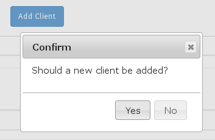First, a panel with the ID "dialogPanel" is added to the Dynaform with its content property containing:
JavaScript code will be used to hide this panel, so the user doesn't see it.
Then, the following JavaScript is added to the Dynaform, to display a dialog box with the message in the "newClientDialog" DIV when the user clicks on a button with the ID "addClient". "Yes" and "No" buttons are added to the dialog box, so the user can confirm the whether a new client should be added to the grid. When the user clicks on one of the buttons, the dialog box is hidden and the callback() function is executed which will add the new client if the user clicked on "Yes".
$("#dialogPanel").hide();
//Create the dialog with "Yes" and "No" buttons:
function showConfirmDlg() {
var dlgContents = {
modal: true,
resizable: false,
buttons: {
"Yes": function() {
$(this).dialog("close");
callback(true);
},
"No": function() {
$(this).dialog("close");
callback(false);
}
}
}
$("#newClientDialog").dialog(dlgContents);
}
//show dialog when the user clicks on the "addClient" button:
$("#addClient").find("button").on("click" , showConfirmDlg);
//function to add new client to the grid if the user clicked on "Yes"
function callback(answer) {
if (answer == true) {
var newClient = [
{value: $("#clientName").getValue() },
{value: $("#contractAmount").getValue()},
{value: $("#contractDate").getValue() }
];
$("#clientGrid").addRow(newClient);
}
}

Importing files referencing Dynaform objects
External JavaScript files loaded through the external libs property cannot reference any objects in the Dynaform, because the code in the external file is downloaded and executed before the Dynaform is generated by ProcessMaker. In order to execute the code in an external JavaScript file after the Dynaform is generated, use the following code to add an external JavaScript file to the Dynaform:
var url = "http://www.example.com/mycode.js";
var fileref=document.createElement('script');
fileref.setAttribute("type","text/javascript");
fileref.setAttribute("src", url);
$("head")[0].appendChild(fileref);
Note: Any files uploaded to the Public Files manager are publicly accessible, so the JavaScript code cannot be hidden from the general public. If needing to keep your code secret, then do not use this method.
It is also possible to incorporate CSS (Cascading Style Sheet) files into a Dynaform using similar code. If needing to include CSS file after the Dynaform is generated, then add the following JavaScript code to the Dynaform to include the file mystyle.css which is stored on the ProcessMaker server at {INSTALLATION-DIRECTORY}/workflow/public_html/mystyle.css:
var url = "http://www.example.com/mystyle.css";
var fileref=document.createElement("link");
fileref.setAttribute("rel", "stylesheet");
fileref.setAttribute("type", "text/css");
fileref.setAttribute("href", url);
$("head")[0].appendChild(fileref);
Importing confidential files
If files are placed in the Public Files manager or in the processmaker/workflow/public_html directory on the ProcessMaker server, then they will be publicly accessible. JavaScript and CSS files in these locations can be imported into a Dynaform using its external libs property, but this can be a problem if they contain confidential code that an organization does not wish to share with the world.
To keep JavaScript and CSS files confidential so that only certain ProcessMaker users can access them, do the following steps:
- Create a group and assign to that group the users who should have access to the confidential files.
- Create a separate process which contains a single task with an Input Document.
- Give that group Process Permissions to access the Input Document.
- Then, run a case in the process and upload all the confidential files in the Input Document.
- Right click on the Download button for each confidential file in the Input Document to get its URL to download it. It should have a URL in the form:
https://DOMAIN_OR_IP_ADDRESS/sysWORKSPACE/LANG/SKIN/cases/cases_ShowDocument?a=FILE_UID&v=VERSION_NUMBER
(Use thehttp:protocol if not using SSL or TLS.)
For example:
https://example.com/sysworkflow/en/neoclassic/cases/cases_ShowDocument?a=90867389156d629c03d98c1058762491&v=1
The URLs to download confidential JavaScript and CSS files cannot be used in the external libs property, because ProcessMaker doesn't know the type of file. JavaScript code has to be used to import these files into a Dynaform.
To import a confidential JavaScript file into a Dynaform, add the following JavaScript code to the Dynaform:
var url = "https://example/sysworkflow/en/neoclassic/cases/cases_ShowDocument?a=90867389156d629c03d98c1058762491&v=1";
var fileref=document.createElement('script');
fileref.setAttribute("type","text/javascript");
fileref.setAttribute("src", url);
$("head")[0].appendChild(fileref);
var url = "https://example/sysworkflow/en/neoclassic/cases/cases_ShowDocument?a=90867389156d629c03d98c1058762491&v=1";
var fileref=document.createElement("link");
fileref.setAttribute("rel", "stylesheet");
fileref.setAttribute("type", "text/css");
fileref.setAttribute("href", url);
$("head")[0].appendChild(fileref);
Frames
When clicking on one of the options in the sidebar under the Home menu, the list of processes, cases or documents is placed inside nested <iframe>s, which are named "casesFrame" and "casesSubFrame".
Likewise, when cases are run, they are placed inside nested <iframe>s, which are named "casesFrame", "casesSubFrame" and "openCaseFrame", respectively.
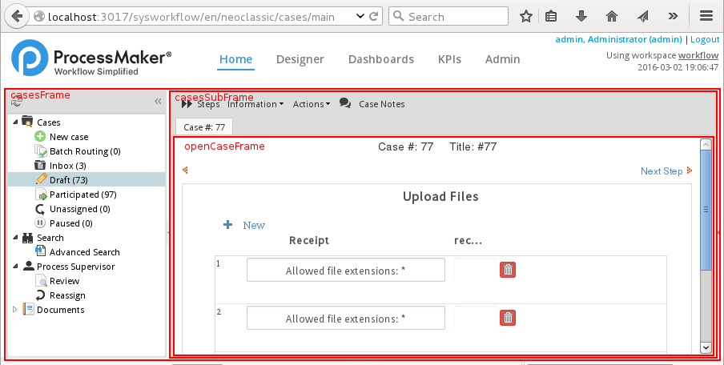For example, when opening a new case, the nested <iframe>s in the HTML code would be:
<iframe id="casesSubFrame" class=" ux-mif" frameborder="0" name="casesSubFrame" style="overflow: auto; width: 684px; height: 334px;" src="casesStartPage?action=startCase">
<iframe id="openCaseFrame" class=" ux-mif" frameborder="0" name="openCaseFrame" style="overflow: auto; width: 676px; height: 269px;"
src="cases_Open?APP_UID=59372559056d7759c093fe1036165165&DEL_INDEX=1&action=draft">
</iframe>
</iframe>
</iframe>
The src of the "casesFrame", which is the outermost frame, is always set to "../cases/main_init". However, the src of "casesSubFrame" is changed depending on which option the user clicks in the sidebar and when a case is opened.
The "casesSubFrame" can be set to the following URLs in its src property:
src="casesStartPage?action=startCase" |
View a list of processes where the logged-in user can initiate cases. | |
src="casesConsolidatedListExtJs?action=consolidated" |
View a list of cases to do Batch Routing, which is an option available in the Enterprise Edition | |
src="casesListExtJs?action=todo" |
View the list of cases in the Inbox | |
src="casesListExtJs?action=draft" |
View the list of Draft cases. | |
src="casesListExtJs?action=sent" |
View the list of Participated cases. | |
src="casesListExtJs?action=selfservice" |
View the list of as Self Service cases, which the logged-in user can claim to work on. | |
src="casesListExtJs?action=paused" |
View the list of Paused cases, assigned to the logged-in user | |
src="casesListExtJs?action=search" |
View the list of cases under Advanced Search, if the logged-in user has the PM_ALLCASES permission in his/her role. | |
src="casesListExtJs?action=to_revise" |
View the list of cases to Review, if the logged-in user has the PM_SUPERVISOR in his/her role. | |
src="casesListExtJs?action=to_reassign" |
View the list of cases to Reassign, if the logged-in user has the PM_SUPERVISOR and PM_REASSIGNCASE in his/her role. | |
src="casesStartPage?action=documents" |
View the list of Documents which were uploaded at attached files or Input Documents or generated as Output Documents. To view this option, the logged-in user must have the PM_FOLDERS_VIEW permission in his/her role. | |
When the user opens a case, the "openCaseFrame" is created inside the "casesSubFrame" to display the contents of the case.
Web Browser Redirection
Note: For ProcessMaker Desktop only.
The window.location object can be used to redirect the current frame of the web browser to a new address. Note that in JavaScript, the window object is assumed, so it isn't necessary to write it. window refers to the current frame or the web browser's window if not inside a frame.
To redirect the topmost window, use window.top.location. For example, to redirect the web browser to the Home menu:
The URL can be a relative address of a file in the current directory. For example, to display just the content of home, without the menu bar:
top.location.href = "main_init";
.. to go to the parent directory. For example, to go from the Home menu to the Admin menu:
top.location.href = "../setup/main"; //go to "Admin" menu
Likewise, the window.frames object can be used to reference the frames. The top.frames.FRAME_ID.location object can be used to set the URL of a frame. For example, to set the "casesSubFrame" to display a list of the cases in "Draft" status:
Frames can also be referenced as an index in an array, instead of using their name. For example, to start a new case in the "casesSubFrame":
System Properties
Note: For ProcessMaker Desktop only.
Dynaforms have properties containing information about the current system and the current case. The "openCaseFrame" is the frame where the current step in the case is displayed. It contains the following properties:
frames.app_uidThe unique ID of the current case.frames.dyn_uidThe unique ID of the current Dynaform.frames.prj_uidThe unique ID of the current project/process.frames.sysLangThe ISO code for the system language such as"en"(English) or"fr-FR"(French from France).
The "casesSubFrame" is a frame which contains the following properties:
top.frames.casesFrame.casesSubFrame._ENV_CURRENT_DATE_NO_FORMATThe current datatime of the system in the format"YYYY-MM-DD-HH-MM-XM". Ex:"2016-03-04-11-18-PM"top.frames.casesFrame.casesSubFrame._ENV_CURRENT_DATEThe current date in the system's format. Ex:"2016-03-04"top.frames.casesFrame.casesSubFrame._APP_NUMThe case number. Ex:"#: 103"top.frames.casesFrame.casesSubFrame._APP_UIDThe unique ID of the current case. Ex:"90416995256da1441601ab3043852116"top.frames.casesFrame.casesSubFrame._PRO_UIDThe unique ID of the current case's process. Ex:"81415808156d497f9f1fbb5007224692"top.frames.casesFrame.casesSubFrame._PROJECT_TYPEThe type of project. Ex:"bpmn"top.frames.casesFrame.casesSubFrame.appStatusThe status of the current case. Ex:"DRAFT"top.frames.casesFrame.casesSubFrame.uriThe relative address to open the current case.
Ex:"cases_Open?APP_UID=4186085225d701cf8932f93036185047&DEL_INDEX=1&action=draft"
Note: To get the complete address, prepend:"http://{domain-or-ip}/sys{workspace}/{lang}/{skin}/cases/"
Tooltips
Note: For ProcessMaker Desktop only.
The hint property can be used to add tooltips, which are popup messages, to many types of input fields. However, some types of controls, such a titles, subtitles, grids, buttons, submits, labels and panels do not have a hint property. Nonetheless, a tooltip can be added to any element in a Dynaform, simply by adding a title property to the element.
Example:
A Dynaform has a button with the ID "cancel". The following JavaScript code adds a tooltip with the message "Click to cancel your order" to the "cancel" button". It also inserts the  icon next to the button to inform the user that a tooltip is available. This icon is available in ProcessMaker at the URL
icon next to the button to inform the user that a tooltip is available. This icon is available in ProcessMaker at the URL "../../../../images/documents/_help.png".
$("#cancel").append('<img src="../../../../images/documents/_help.png" title="Click to cancel your order">');
When the user hovers the mouse over the "cancel" button or the icon, the tooltip will appear:
For long tooltips, use \n to insert line breaks in the message:
Tooltips for Column Headers in Grids
Note: For ProcessMaker Desktop only.
Tooltips can also be added to the column headers in grids, which can found in a <span> with class "title-column", so it can be obtained with the following selector:
Example:
A grid with the ID "workHistory" lists the tasks performed for a client. The grid contains a field with the label "Task". The following JavaScript code adds the tooltip message "Task performed for client" to the "Task" header. It also inserts an icon to let the user know that a tooltip is available:
$("span.title-column[title=Task]").html(
$("span.title-column[title=Task]").html() + ' <img src="../../../../images/documents/_help.png">'
);
//change the title:
$("span.title-column[title=Task]").prop("title", "Task performed for client");
The tooltip will appear when hovering the mouse over the column header:
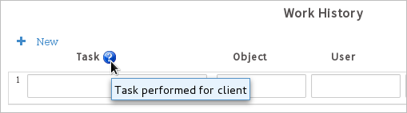Tooltips inside Grids
Note: For ProcessMaker Desktop only.
Adding tooltips next to grid fields is a bit more complicated, because the existing number of rows in a grid is variable and new rows can be added to the grid by the user. The grid.getNumberRows() method can be used to get the existing number of rows in the grid when the Dynaform loads, so an icon with a title property can be inserted next to a field in each row. The grid.onAddRow() method can be used to insert a icon with a title property in each new row added by the user. Finally, the grid.getControl() method to obtain the grid's object.
Example:
The following JavaScript code inserts a icon with a tooltip next to the first column inside a grid with the ID "workHistory". The width of the first column field has to be reduced by 20 pixels so that there is room to insert the icon.
var fieldId = '1'; //set to column number
var messageText = 'Task performed for client';
//function to insert help icon with a tooltip next to a specified grid field:
function addTooltip(grid, row, field, tooltipText) {
var width = parseInt($("#" + gridId).getControl(row, field).css("width"));
$("#" + gridId).getControl(row, field).css("width", width-25);
$("#" + gridId).getControl(row, field).parent().append(
'<img src="../../../../images/documents/_help.png" title="' +tooltipText+ '">'
);
}
//add tooltip to existing rows when Dynaform loads:
var cnt = $("#" + gridId).getNumberRows();
for (var i = 1; i <= cnt; i++) {
addTooltip(gridId, i, fieldId, messageText);
}
//add tooltip to new rows added by the user:
$("#" + gridId).onAddRow(function(aNewRow, oGrid, newIndex) {
addTooltip(gridId, newIndex, fieldId, messageText);
})
The above code will insert tooltips in every row in the grid:
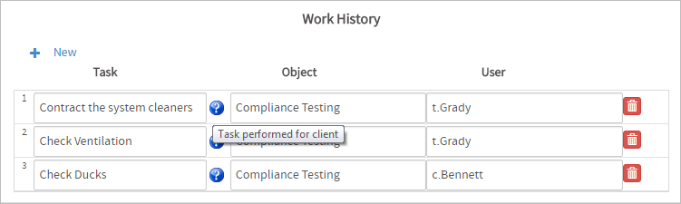Debugging JavaScript
Whenever adding new JavaScript code to a Dynaform, always check to see whether the code generates errors or warnings. When editing a Dynaform, the JavaScript can be executed by switching to preview mode by clicking on in the toolbar.
The other way to execute the JavaScript code is to go to Home > New and run a case which opens the Dynaform containing the code.
If your JavaScript code contains an error that is executed when the Dynaform is initially loaded, then the web browser will get stuck showing spinning circles.
If the error lies in code that is executed later when an event occurs, then the Dynaform will be displayed, but the JavaScript code will not be executed and nothing will appear to happen. By default most web browsers are configured to not display error messages, so it won't be obvious that an error has occurred until you check the JavaScript error messages. See the instructions below to configure Firefox, Chrome and Internet Explorer to display JavaScript errors and use the console to interactively enter JavaScript code.
Remember that JavaScript is implemented differently in different web browsers, so custom JavaScript code needs to be tested on every web browser which your organization uses. Older versions of Internet Explorer tended to not adhere to the standards for ECMAScript, DOM, and CSS and Mozilla Firefox often adds non-standard functions, so it is a good idea to use object/feature detection in your code to ensure that it will be cross-browser compatible.
Remember that ProcessMaker only officially supports a few web browsers, so don't be surprised if JavaScript doesn't work correctly on other web browsers.
When debugging JavaScript code, it is often useful to display the contents of variables and execute JavaScript commands interactively in the console (in Chrome Developer Tools, Firefox Debugger, Firebug, Internet Explorer Developer Tools, etc.) When in preview mode, a Dynaform is placed inside an <iframe> with no ID whose src="cases/pmDynaform?dyn_uid=dynaform-id". When running a case, the Dynaform is placed inside an <iframe> with the ID "openCaseFrame" whose src="cases_Open?APP_UID=case-uid&DEL_INDEX=delegation-index&action=draft".
In order to interactively execute JavaScript commands in the Dynaform using the console, it is necessary to first change to the iframe where the Dynaform is located. Chrome Developer Tools provides a dropdown box to select the frame where console commands are executed. Firefox Debugger in version 34 and later provides an option to select the iframe for executing console commands. Firebug provides the cd() function to switch frames. See the instructions below for how to use the console in Chrome Developer Tools, Firefox Debugger and Firebug.
Debugging with Firefox
Recent versions of Mozilla Firefox have added better tools to debug JavaScript. Firefox version 19 and later includes a built-in Debugger. In version 28 and later, a full Browser Toolbox was added which also includes the Debugger. However, the Firefox Debugger is not really useful before version 34 when an option was added to select the frame for executing console commands. If using Firefox before version 34, it is recommended to use the Firebug extension which is good but slow. As a last resort, the Firefox Error Console can always used, although it isn't recommended.
Firefox Debugger
The Firefox Debugger includes an Inspector to look at the HTML, CSS and JavaScript code, a Console to see any error and warning messages and interactively enter JavaScript commands, a Debugger to watch breakpoints as code executes, a Style Editor to edit the CSS, plus several other useful tools.
To enable the Firefox Debugger in version 19 and later, go to the URL: about:config
Then, set the following configuration options to true:
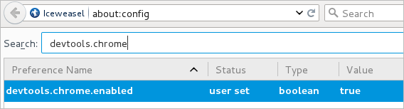
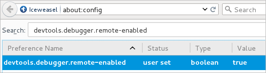
Then, restart Firefox for the Firefox Debugger to be enabled. To open the Debugger, either press CTRL + SHIFT + S or go to Tools > Web Developer > Debugger in the menu.
Note: If the Firefox menu isn't visible, press the ALT or F10 key to make it appear. The menu can be configured to always appear by going to 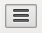 > Customize. In the Show/Hide Toolbars dropdown box in the lower left corner, mark the Menu Bar checkbox.
Open the Debugger when previewing or executing a Dynaform. In the Debugger go to Console > JS to see any errors in the list, which will be marked by and the error message listed in a pink background:

It is a good idea to only show JavaScript errors and warnings. Click on the down arrow next to the CSS tab and unmark all the options to show Errors, Warnings and Reflows.

Then click on the down arrow next to the JS tab and mark the options to show Errors and Warnings.
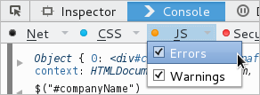In order to examine the HTML code and the CSS code associated with each element in the Dynaform, click on the icon in the upper right corner of the Debugger to activate the Inspector and then click on an element in the Dynaform to select it. The Debugger will display spacing information on the screen around the element. In the Inspector tab, it will display the element's HTML code in the bottom left-hand panel and its CSS code inside the right-hand panel. The HTML and CSS code can be dynamically edited inside the Debugger to immediately see changes on the screen.
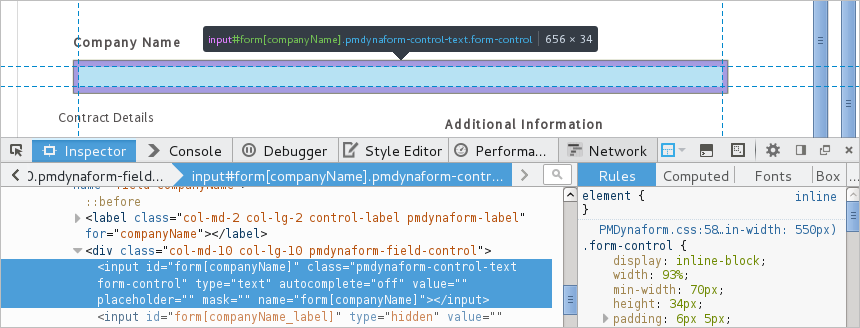Executing JavaScript in the Console
In order to execute JavaScript interactively in the console, the <iframe> where the Dynaform is located must be selected. In Firefox version 34 and later, the Debugger provides a option to select the iframe. First, go to in the upper right corner of the Debugger and then under the "Available Toolbox Buttons" section, mark the "Select an iframe as the currently targeted document" option.

Then, open a Dynaform in preview mode or inside a case and go to the 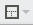 dropdown box in the Debugger toolbar and select the iframe which holds the Dynaform. If in preview mode, it will be found at the address http://address/sysworkspace/skin/cases/pmDynaform?dyn_uid=dynaform-id.
Once the Dynaform's iframe is selected, then JavaScript commands can be entered in the bottom of the console at the >> prompt. Press ENTER to execute the command. Any results from the command will be displayed in the console. For example, entering $("#companyName") displays the content of the object in the console:
Clicking on Object or Array in the console will open a right-hand panel in the Debugger which displays the contents of the object or array. To see further details, click on the  arrows in the right-hand panel to expand the contents of objects and arrays.
arrows in the right-hand panel to expand the contents of objects and arrays.
Firebug Extension
If using Firefox before version 34, it is recommended to install the Firebug extension, which is good, but slower than the built-in Firefox Debugger. Make sure to install the right version of Firebug for your version of Firefox. After installing Firebug and restarting Firefox for the extension to be loaded, in the menu go to Tools > Web Developer > Firebug > Visible Panels > Select All Panels in order to see all the panels.
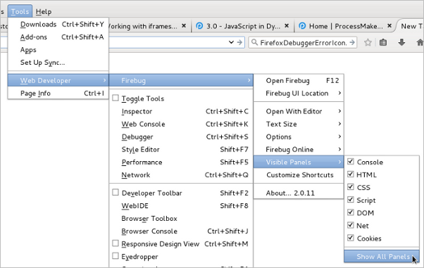To use Firebug, press F12 or go to Tools > Web Developer > Firebug > Open Firebug in the menu. To see any errors that have occurred in your JavaScript code, go to Console > Errors or Console > All:
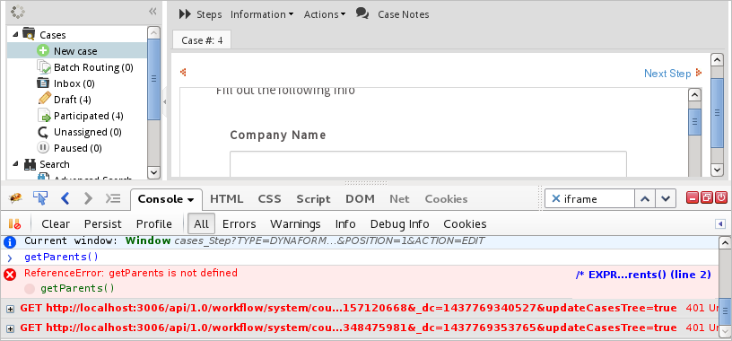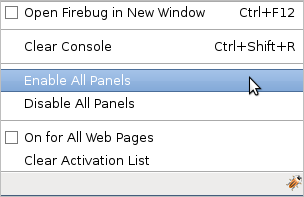
If an error occurs in JavaScript, older versions of Firebug will display a message like  in the status bar. Click on it to see the error messages.
in the status bar. Click on it to see the error messages.
Firebug can also be used to examine the HTML and CSS code for a particular element in a Dynaform, which is useful if needing to discover the IDs of elements or the structure of the DIVs. To inspect an element, click on the icon in the Firebug toolbar or press CTL+SHIFT+C. Then, position the mouse over the element in the Dynaform to see its HTML and CSS code.
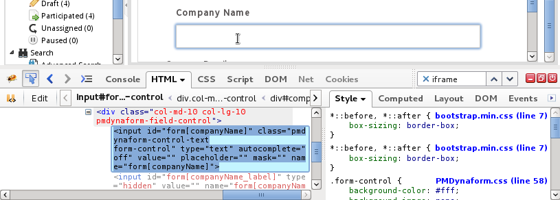To enter JavaScript code interactively in the console, first switch to the iframe used by the Dynaform. In Firebug, go to Console > All, then use the cd() function to switch to the iframe where the Dynaform is located. If in preview mode when editing a Dynaform, enter:
If viewing a Dynaform while running a case, then enter:
Note: To return to the top frame in the browser window, enter:
Then enter the name of variables to examine their contents or enter a JavaScript command to examine its return value in the Console screen. Press ENTER to execute the JavaScript. For example, to view the contents of the $("#companyName") object:
To view the contents of an object or array, click on Object or Array in the output of the console and its contents will be expanded.
Firefox Error Console
As a last resort, use the FireFox Error Console to debug JavaScript code, which is currently available in all versions of Firefox, although it will eventually be removed.
In recent versions of Firefox, the Error Console has been disabled. To enable it, enter the URL: about:Config
Then, set:
To use the Firefox Error Console, go to Tools > Web Developer > Error Console.
Note: In older versions of Firefox, it can be opened by pressing CTRL + SHIFT + J, but that now opens the new Browser Console, which has replaced the Error Console.
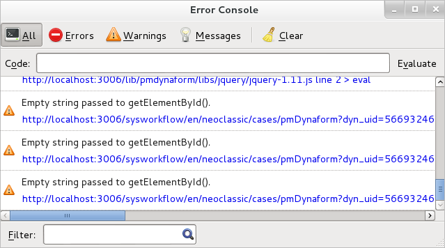Debugging in Chrome
If using the Chrome web browser, the Chrome Developer Tools can be used to check whether an error occurred while executing the JavaScript code.
To open the Developer Tools, press F12 or press CTRL + SHIFT + I or go to > Tools > Developer Tools.
If an error has occurred in your JavaScript code, an error icon 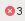 will appear in the Dev Tool's toolbar. To see the errors, either click on it or the Console tab.

To expand an error message, click on the arrow in the output of the console.
To examine the HTML and CSS code associated with an element in a Dynaform, click on 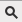 to activate the Inspector. Hover the mouse over elements to see their sizing information on the screen. To see their HTML and CSS code, click on an element in the Dynaform.
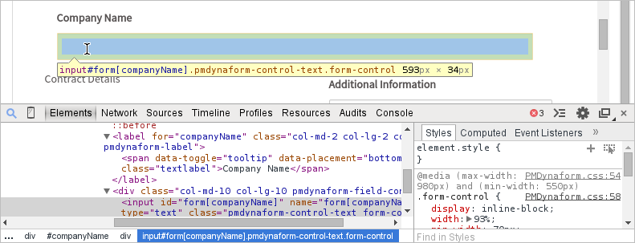In order to execute JavaScript commands in the iframe where the Dynaform is located, go to the Console tab and select the frame in the dropdown box at the top of the console. If in preview mode, then select the "pmDynaform" frame. If viewing a Dynaform while running a case, then select the "openCaseFrame( cases_Step )" frame.
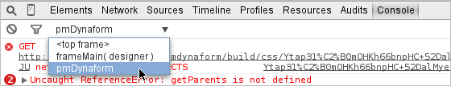To examine a variable, enter the name of the variable in the prompt and press ENTER. Likewise, JavaScript commands can be executed in the console. For example, enter: $("#companyName")
To expand an object or array in the output of the console, click on the arrow next to it to see its contents.
Debugging in Internet Explorer 11 & MS Edge
Internet Explorer 11 and Microsoft Edge offers Developer Tools, which can be used to debug JavaScript code.
To open the Developer Tools, either press F12 or in the Tools command bar, click on the Developer Tools button.
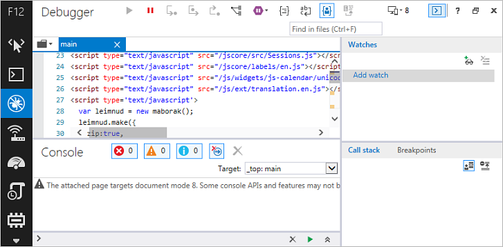
When debugging code, it is a good idea to adjust Internet Explorer's settings so that a dialog box will always open up when an error occurs. In the menu, go to Tools > Internet Options. In the "Internet Options" dialog box, go to the Advanced tab and check the option Display a notification about every script error.
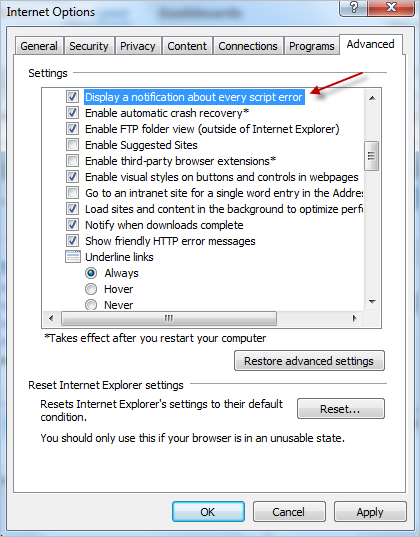
If the browser detects a JavaScript error, a warning message window with a red icon will be displayed. Check the "Use the built-in script debugger" option and review the JavaScript error message; then click on "Yes" to open the debugger.
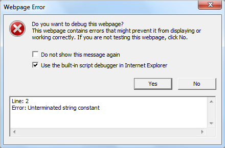
In general, the JavaScript error and warning messages for Internet Explorer are not very informative, so it is recommended to debug JavaScript code with Mozilla Firefox or Chrome.
Examining Variables with Alerts
Entering variables and commands interactively in a console can be useful when debugging, but another way to debug your JavaScript code is to embed commands in the code to display information to the user. If not running a console in the web browser, the alert() function can be used to display the value of variables or display a message to the user.
To see the value of a variable, insert the following line in your JavaScript:
A message can also be displayed to the user. For example, to see the value of a hidden field with the ID "currentTotal":
Likewise, the code for a function can be seen by passing the function name to alert(). Only pass the function name without () so it is the reference to the function and not a function call. For example:

The problem with using alert() is that it bothers end users to have to close popup windows and it can't display the contents of arrays and objects.
JavaScript Debugger Keyword
A more elegant solution which doesn't bother the end user is to use the debugger keyword. This keyword is equivalent to setting a breakpoint at a line in the script. By simply placing the debugger keyword in your JavaScript code, it will automatically start debugging the JavaScript code at that point. The variables and messages will be displayed in the console if it is open.
For example, the user can place the debugger keyword to set a breakpoint in the middle of the following code, in order to review the new and old value of a radiobutton control. This code uses the control.setOnchange function.

The console.log Method
Another way to debug a JavaScript code is to use the window.console.log() method to display variables and messages in the console if it is open. This method is supported by all web browsers that can run ProcessMaker, but there is no guarantee that the console object exists, so first check for the window.console object when using this method:
The console.log() method is used in the following code to indicate when certain blocks of code are executed and display the contents of various objects.
function adjustForContractType(newVal, oldVal) {
if (newVal == "independent_contractor") {
window.console && console.log("Independent contractor selected.");
$("#contractorInsurance").show();
}
else if (newVal == "consulting_company") {
window.console && console.log($("#totalAmount"));
$("#contractorName").show();
}
}
When the Dynaform is executed, the messages or variables passed to content.log() will be displayed in the console, where most users will not see it. Most consoles will be able to expand the contents of arrays and objects that are passed to console.log().


{kind=link}